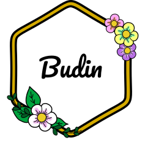

| Horno temp.: | 180º |
|---|---|
| Tiempo de cocción: | 20min/25min |
| Cantidad: | 2 roscas |
| Horno temp.: | 160º |
|---|---|
| Tiempo de cocción: | 35min/40min |
| Cantidad: | 1 tarta grande |

| Horno temp.: | 180º |
|---|---|
| Tiempo de cocción: | 45min/50min |
| Cantidad: | 1 budín |
| Horno temp.: | 180º |
|---|---|
| Tiempo de cocción: | 30min |
| Cantidad: | 1 cremona |
| Horno temp.: | 180º |
|---|---|
| Tiempo de cocción: | 15min |
| Cantidad: | 1 tarta |
| Agua temp.: | 100º |
|---|---|
| Tiempo de cocción: | cuando floten |
| Cantidad: | 4 porciones |
| Horno temp.: | 180º |
|---|---|
| Tiempo de cocción: | 12min aprox. |
| Cantidad: | 20 galletas |
| Horno temp.: | 220º luego a 180º |
|---|---|
| Tiempo de cocción: | 5min->hasta que doren |
| Cantidad: | 14 fosforitos |
| Hornalla: | Fuego min/Fuego corona |
|---|---|
| Tiempo de cocción: | 5min |
| Cantidad: | 1 torta de 4 pisos |